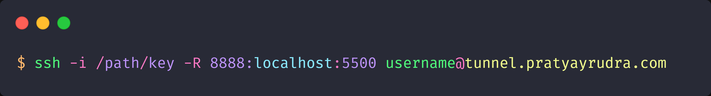
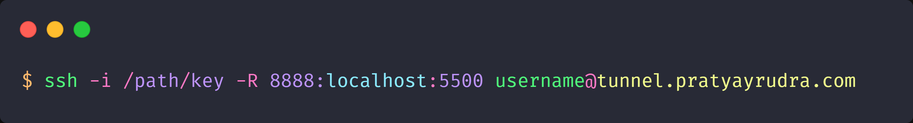

SSH REVERSE TUNNEL
I use this to exposes local servers behind NATs and firewalls to the public
internet
Note : This is for my personal use only.

I use this to exposes local servers behind NATs and firewalls to the public
internet
Note : This is for my personal use only.
